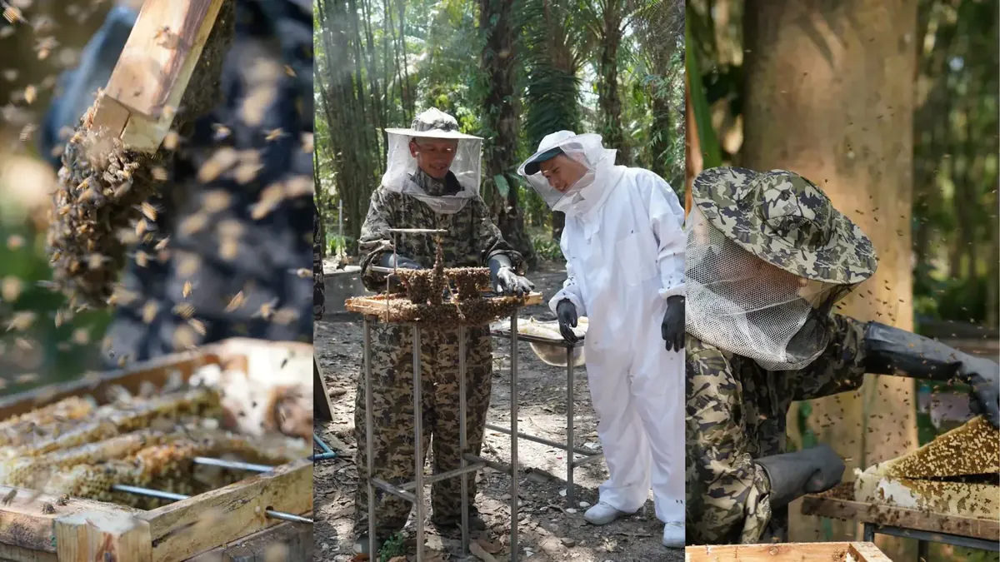
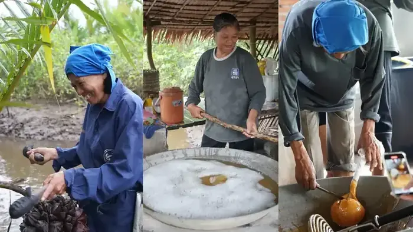
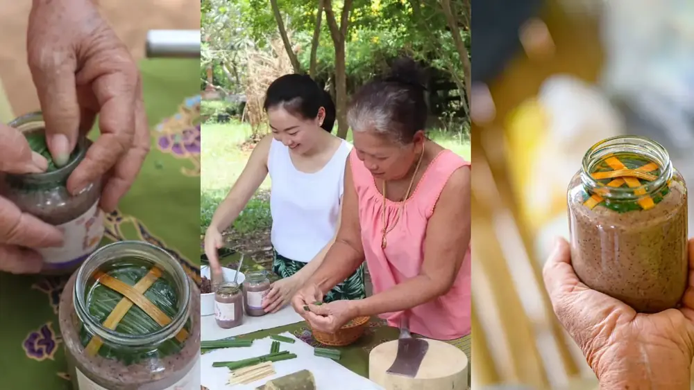
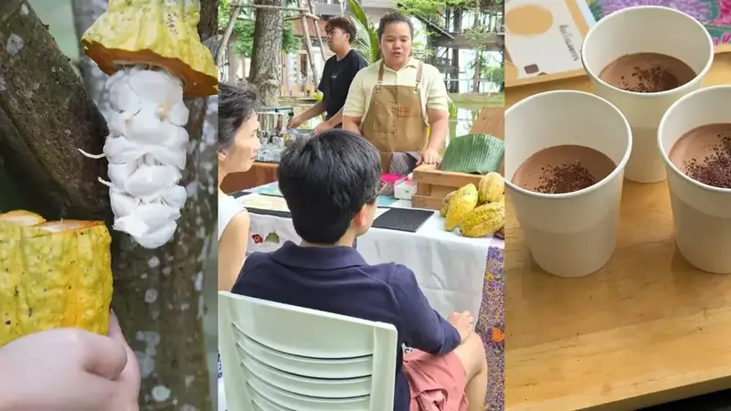
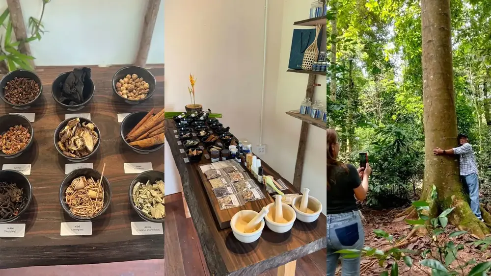

เก็บน้ำผึ้งอย่างยั่งยืนกลางป่าปะทิว สัมผัสประสบการณ์ผู้เลี้ยงผึ้งตัวจริง

ลุยคลองบางสนเก็บน้ำหวานจากต้นจาก มาทำ 'น้ำตาลจาก' ความหวานหายากที่ดีต่อสุขภาพ

เรียนสูตรกะปิเคยแบบโบราณสืบทอดหลายรุ่นจากป้าปิ่น หอมอร่อยเป็นเอกลักษณ์ของชุมพร

เวิร์คช็อปช็อกโกแลตจากไร่โกโก้ท้องถิ่นกับ J&O ชิมช็อกโกแลตเข้มข้นสูตรขายดีของร้าน

ผสมไม้หอมและสมุนไพรจากสวนป่าเล้งเหลา สร้างสรรค์กลิ่นยาดมสูตรเฉพาะตัวคุณเอง
Contact us directly via LINE or phone to check availability and book.
@ouadchum
082-116-6905
098-009-8842